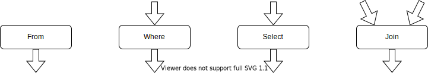
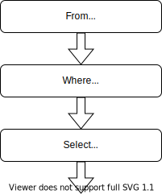

Tutorial
SQL and FunSQL
SQL is a specialized language used for querying and manipulating data in database management systems.
FunSQL is a Julia library for assembling SQL queries. It exposes full expressive power of SQL through a uniform compositional interface.
Sample Database
Throughout this tutorial, we use a tiny SQLite database containing a 10 person sample of simulated patient data, which is extracted from the CMS DE-SynPuf dataset.
To follow along with the tutorial, you can download the database file using the following code:
const URL = "https://github.com/MechanicalRabbit/ohdsi-synpuf-demo/releases/download/20210412/synpuf-10p.sqlite"
const DB = download(URL)Alternatively, to avoid downloading the file more than once, we can register the download URL as an artifact and use Pkg.Artifacts API to fetch it:
using Pkg.Artifacts, LazyArtifacts
const DB = joinpath(artifact"synpuf-10p", "synpuf-10p.sqlite")To interact with a SQLite database, we need to install the SQLite package. Once the package is installed, we can use it to connect to the database:
using SQLite
const conn = SQLite.DB(DB)Database Schema
The data in the sample database is stored in the format of the OMOP Common Data Model, an open source database schema for observational healthcare data. In this tutorial, we will only use a small fragment of the Common Data Model.

Before we can start assembling queries with FunSQL, we need to make FunSQL aware of the database schema. Specifically, for each table in the database, we need to create a corresponding SQLTable object, which encapsulates the table name and its columns.
using FunSQL: SQLTableThe patient data, including basic demographic information, is stored in the table person:
const person =
SQLTable(:person,
columns = [:person_id, :year_of_birth, :location_id])Patient addresses are stored in a separate table location, linked to the person table by the key location_id:
const location =
SQLTable(:location,
columns = [:location_id, :city, :state])The bulk of patient data consists of clinical events: visits to healthcare providers, recorded observations, diagnosed conditions, prescribed medications, etc. In this tutorial we only use two types of events, visits and conditions:
const visit_occurrence =
SQLTable(:visit_occurrence,
columns = [:visit_occurrence_id, :person_id,
:visit_concept_id,
:visit_start_date, :visit_end_date])
const condition_occurrence =
SQLTable(:condition_occurrence,
columns = [:condition_occurrence_id, :person_id,
:condition_concept_id,
:condition_start_date, :condition_end_date])The specific type of the event (e.g., Inpatient visit or Essential hypertension condition) is indicated using a concept id column, which refers to the concept table:
const concept =
SQLTable(:concept,
columns = [:concept_id, :concept_name])Different concepts may be related to each other. For instance, Essential hypertension is a Hypertensive disorder, which itself is a Disorder of cardiovascular system. Concept relationships are recorded in the corresponding table:
const concept_relationship =
SQLTable(:concept_relationship,
columns = [:concept_id_1, :concept_id_2, :relationship_id])Using FunSQL
In FunSQL, a database query is represented as a data processing pipeline assembled from elementary data processing operations, each of which represents a particular SQL clause. Depending on its type, the operation may expect zero, one or more input datasets, and it always emits one output dataset. Visually, we can represent a SQL operation as a pipeline node with a certain number of input arrows and one output arrow.

To demonstrate query construction with FunSQL, let us consider the following question:
Who are the patients born between 1930 and 1940 and what is their current age (by the end of 2020)?
To answer this question, we assemble a simple SQL pipeline.
In FunSQL notation, pipeline nodes are created using appropriate query constructors, such as From, Where, and Select, which are connected together using the pipe (|>) operator:
using FunSQL: From, Fun, Get, Select, Where
q = From(person) |>
Where(Fun.and(Get.year_of_birth .>= 1930,
Get.year_of_birth .< 1940)) |>
Select(Get.person_id,
:age => 2020 .- Get.year_of_birth)Some of the query constructors take scalar expressions as arguments. For example, Where expects a predicate expression:
Where(Fun.and(Get.year_of_birth .>= 1930,
Get.year_of_birth .< 1940))The argument of this Where node is assembled using Get references, Fun invocations, and broadcasted operators. The expression Get.year_of_birth refers to the column year_of_birth of the input dataset. The SQL operator AND is represented by a function Fun.and. Any SQL function or operator can be represented in this manner. Certain functions and operators, notably, comparison operators, could also be expressed using Julia broadcasting notation.
Once the query pipeline is constructed, it could be serialized to a SQL query. We can specify the target SQL dialect, such as :sqlite or :postgresql:
using FunSQL: render
sql = render(q, dialect = :sqlite)
print(sql)
#=>
SELECT "person_1"."person_id", (2020 - "person_1"."year_of_birth") AS "age"
FROM "person" AS "person_1"
WHERE (("person_1"."year_of_birth" >= 1930) AND ("person_1"."year_of_birth" < 1940))
=#At this point, the job of FunSQL is done. To submit the SQL query to the database engine, we can use suitable Julia database bindings:
res = DBInterface.execute(conn, sql)
#-> SQLite.Query( … )The output of the query could be displayed in a tabular form by converting it to a DataFrame object:
using DataFrames
res |> DataFrame |> display
#=>
2×2 DataFrame
Row │ person_id age
│ Int64 Int64
─────┼──────────────────
1 │ 30091 88
2 │ 72120 83
=#Assembling Queries
FunSQL represents SQL queries and their components as objects of type SQLNode. FunSQL provides a large collection of SQLNode constructors such as From, Where, Select, Get, and Fun. Many of these constructors expect other SQLNode objects as arguments so that together they assemble into a directed acyclic graph.
FunSQL recognizes two kinds of SQL expressions: tabular operations and row operations. Tabular operations take a certain number of input datasets and produce an output dataset. Row operations act on a dataset row and produce a scalar value.
The majority of tabular operations are parameterized with row expressions. Likewise, a row operation may include a tabular expression, which in this case is called a (correlated) subquery.
The following tabular operations are available in FunSQL.
| Constructor | Function |
|---|---|
Append | concatenate datasets |
As, => | introduce a namespace |
Bind | correlate a subquery in a join expression |
Define | add an output column |
From | produce the content of a database table |
Group | partition the dataset into disjoint groups |
Join, LeftJoin | correlate two datasets |
Limit | truncate the dataset |
Order | sort the dataset |
Partition | add a window to the dataset |
Select | specify output columns |
Where | filter the dataset by the given condition |
The following row operations are available in FunSQL.
| Constructor | Function |
|---|---|
Agg | invoke an aggregate function |
As, => | assign a column alias |
Bind | correlate a subquery |
Fun, broadcasting | invoke a scalar function |
Get | produce the value of a column |
Lit | produce a constant value |
Sort, Asc, Desc | indicate the sort order |
Var | produce the value of a query parameter |
Note that some SQLNode constructors (As, Bind) can be used both as a tabular operation and as a row operation.
From, Where, and Select
Recall the query demonstrated in the Using FunSQL section:
From(person) |>
Where(Fun.and(Get.year_of_birth .>= 1930,
Get.year_of_birth .< 1940)) |>
Select(Get.person_id,
:age => 2020 .- Get.year_of_birth)This query is constructed from the tabular operations From, Where, and Select arranged in a typical three-component pipeline.

The From operation takes no inputs and produces the content of a database table. The From constructor takes a SQLTable object describing the table. In a query expression, a SQLTable object is implicitly converted to to a From operation; thus the query above could be written as:
person |>
Where(Fun.and(Get.year_of_birth .>= 1930,
Get.year_of_birth .< 1940)) |>
Select(Get.person_id,
:age => 2020 .- Get.year_of_birth)The Select operation allows us to specify the output columns. The name of the column is specified using the pair (=>) operator, which is in fact a shorthand for the As operation, so that we can equivalently write:
using FunSQL: As
Select(Get.person_id,
2020 .- Get.year_of_birth |> As(:age))If the column name is not given explicitly, it is derived from the expression that calculates the column value: the name of the reference if the expression is a column reference or the name of the function of the top-level expression is an invocation of a SQL function or an operator.
We should note that as opposed to SQL, FunSQL does not require that the query has an explicit Select constructor, so that the following expression is a valid and complete query:
q = From(person)This SQL query produces all the columns from the person table:
sql = render(q)
print(sql)
#=>
SELECT "person_1"."person_id", "person_1"."year_of_birth", "person_1"."location_id"
FROM "person" AS "person_1"
=#It is also possible to construct a query without From. When a tabular operation, such as Select, that expects an input dataset isn't provided with one explicitly, it is supplied with the unit dataset consisting of one row and no columns. This allows us to create queries that do not depend on the content of any database tables.
q = Select(Fun.current_timestamp())
sql = render(q)
print(sql)
#-> SELECT CURRENT_TIMESTAMP AS "current_timestamp"Column References: Get
As we assemble row operations, we often need to reference a column of the input dataset. FunSQL provides two ways to do it: bound references and unbound references.
An unbound reference is created using the Get constructor:
Get(:person_id)A convenient shorthand notation is available:
Get.person_idA string value could be used instead of a symbol, which is useful when the name of the column is not a valid Julia identifier:
Get("person_id")
Get."person_id"An unbound column reference is always resolved at the place of use. The reference to the year_of_birth column appears several times in the following query:
From(person) |>
Where(Fun.and(Get.year_of_birth .>= 1930,
Get.year_of_birth .< 1940)) |>
Select(Get.person_id,
:age => 2020 .- Get.year_of_birth)As a part of Where, it refers to the column produced by the From operation, but inside Select, it refers to the output of Where.
It is also possible to bind column references to particular nodes. The query above could be written as follows:
q1 = From(person)
q2 = q1 |>
Where(Fun.and(q1.year_of_birth .>= 1930,
q1.year_of_birth .< 1940))
q3 = q2 |>
Select(q1.person_id,
:age => 2020 .- q1.year_of_birth)We replaced unbound references Get.year_of_birth and Get.person_id with bound references: q1.year_of_birth and q1.person_id. If we use a bound reference, the node to which the reference is bound must be a part of the query; otherwise, an error will be raised. Note that in the Select constructor, we could also replace references to q1 with q2, it will not change the meaning of the query:
q3 = q2 |>
Select(q2.person_id,
:age => 2020 .- q2.year_of_birth)Use of unbound references makes query composition more modular. For example, we could encapsulate the condition on the birth range in a Julia function and use it as follows:
BirthRange(start, stop) =
Fun.and(Get.year_of_birth .>= start,
Get.year_of_birth .< stop)
From(person) |> Where(BirthRange(1930, 1940))On the other hand, bound references make it easy to disambiguate columns of different tables.